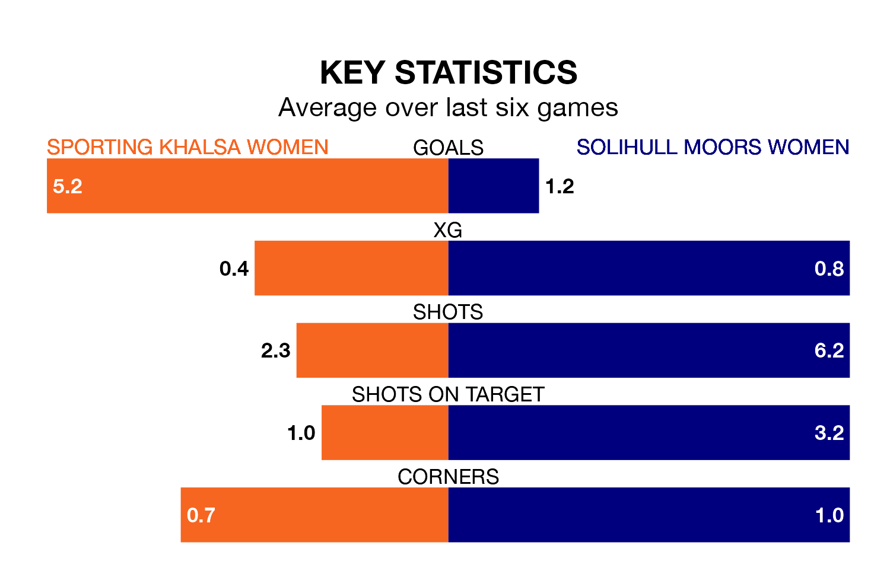

Two of Womens National League Division One Midlands's meanest defences go head-to-head on Sunday, when Sporting Khalsa Women host Solihull Moors Women.
Only one side – Loughborough Lightning Women – has conceded fewer goals than Sporting to date: the home side have let in just 12 goals in nine games.
Solihull Moors have conceded 14 goals in 11 games, giving them the joint-third tightest back line so far this season.
Sporting are fourth in the table after nine games, of which they have won six and drawn one, earning 19 points.
Solihull Moors are two places behind the home side in sixth, with five wins and two draws putting them on 17 points.
Sporting are in good form in Womens National League Division One Midlands, with four wins and a draw from their last six games.
With two wins and a draw over that period, the visitors' form is much worse – they have taken seven points from 18, compared to Sporting's 13.
Over the last year, Sporting and Solihull Moors have played each other on three occasions. Sporting won two of them and Solihull Moors one.
Their last meeting was on September 3, when Sporting won 2-0 away.
Sporting's last match was on January 7, a 5-0 win against Notts County Women.
Solihull Moors drew 2-2 with Loughborough Lightning Women last time out, also on January 7.
Updated: 15:34, 08/01/24